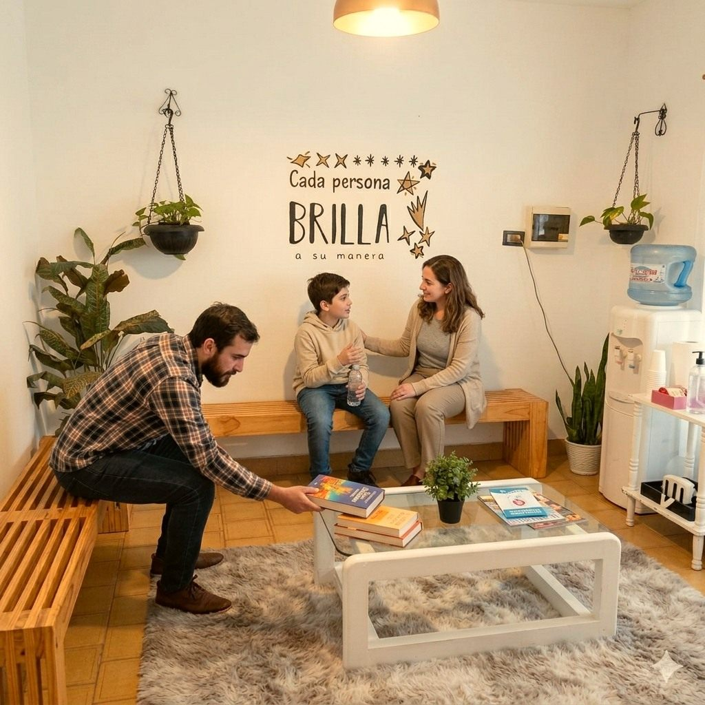

Centro Educativo Terapéutico · Zona Oeste
Un espacio amable y de confianza para acompañarte a vos y a tu familia. Sin apuro, sin juicios, a tu ritmo.
"Valoramos tu valentía. Dar el primer paso no es fácil."
Para conocernos, sin compromiso.

Quiénes somos
Somos un equipo interdisciplinario que trabaja con empatía y compromiso. Lo que más nos dicen quienes llegan a Kalebu es que los escuchamos y que se sienten contenidos. Esa confianza se siente apenas entrás.
Conocé al equipo →Nuestras especialidades
Acompañamiento emocional para chicos, adultos y tercera edad. Un espacio para entenderte y avanzar.
Consultar por WhatsAppLenguaje, habla, voz y deglución en cada etapa de la vida. Abordaje personalizado para cada caso.
Consultar por WhatsAppApoyo a los aprendizajes y al recorrido escolar. Para que la escuela sea un lugar más amable.
Consultar por WhatsAppEl cuerpo, el movimiento y el juego como lenguaje propio de cada chico. Un espacio de exploración.
Consultar por WhatsAppLa música como puente para comunicar, conectar y expresarse. Una herramienta poderosa y única.
Consultar por WhatsAppAutonomía y bienestar en las actividades del día a día. Para recuperar independencia con acompañamiento.
Consultar por WhatsApp¿A quién acompañamos?
Por qué Kalebu
Que empezar sea posible
Es un primer encuentro para conocernos y evaluar, con los servicios de Kalebu, cómo podemos ayudarte. Trabajamos con obra social y particular, y muchas obras sociales reintegran parte de las sesiones.
Quiero reservar mi consultaPara conocernos y evaluar cómo podemos ayudarte.
Muchas obras sociales reintegran parte de las sesiones.
Zona de cobertura
Escribinos por WhatsApp y coordinamos tu primera consulta. Te respondemos con empatía, sin apuro.
Reservá tu primera consulta